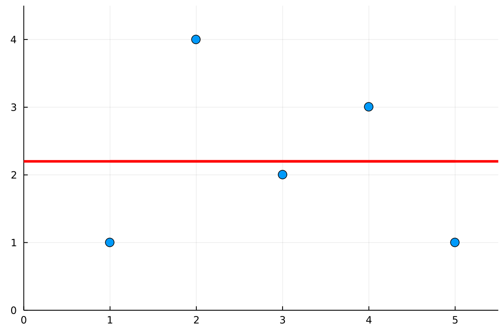
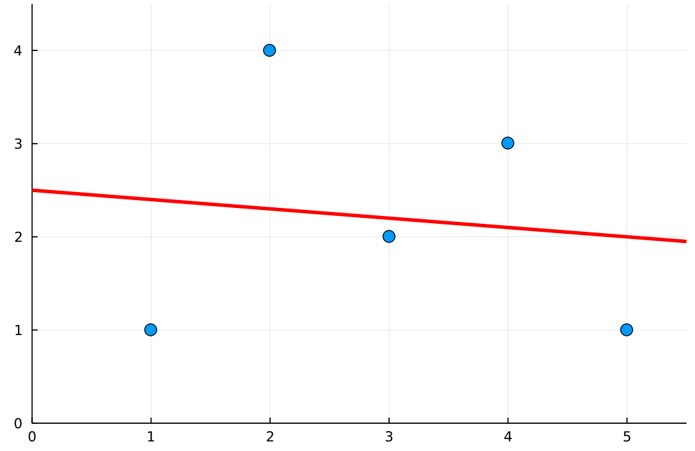
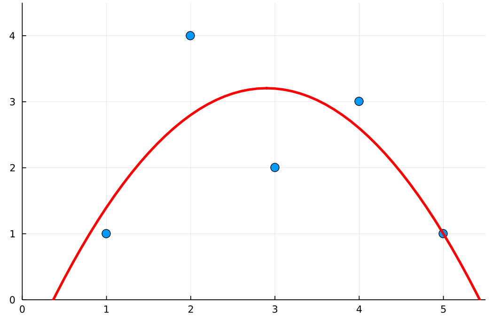
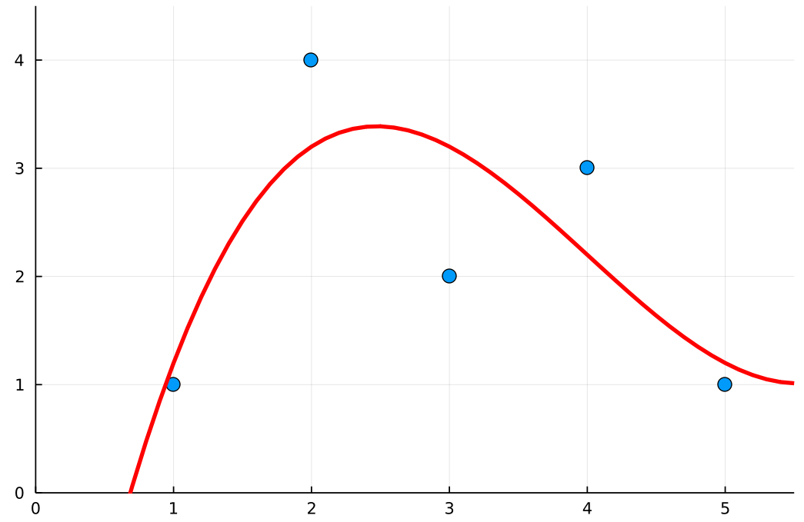
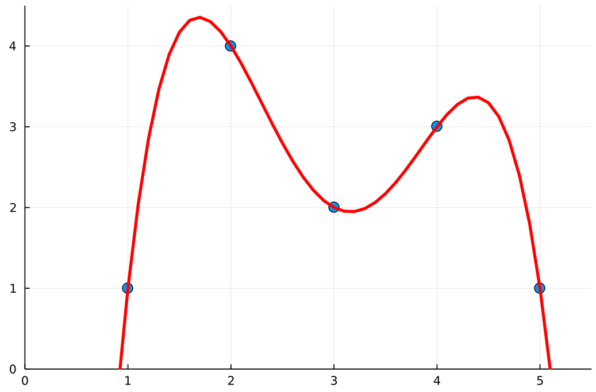
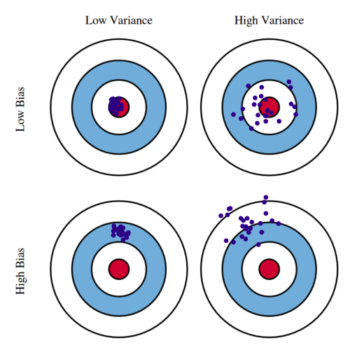
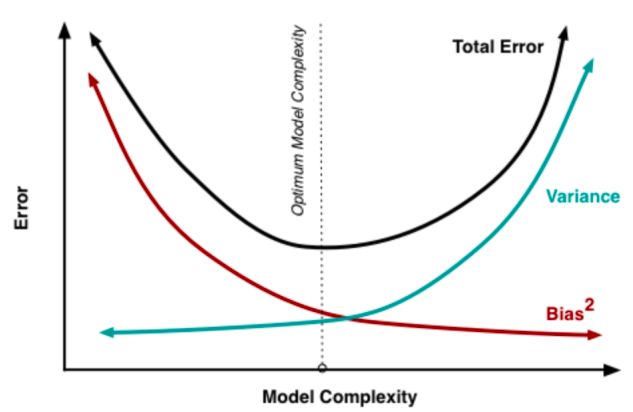

ML - Lesson 03
Indice
Hypothesis set \(\mathscr{H}\)
Nella lezione 2 abbiamo visto che il problema dell'apprendimento automatico supervisionato si riduce nel ricercare una funzione predittore \(h^*\) all'interno di una classe \(\mathscr{H}\) di funzioni (detta hypothesis set) che minimizza il rischio empirico dipendente dal training set \(\mathscr{T}\). \[ h^* = arg \min_{h \in \mathscr{H}} \mathscr{\overline{R}}_{\mathscr{T}}(h) \]
La scelta dell'insieme \(\mathscr{H}\) è uno dei problemi fondamentali del ML.
Infatti osserviamo che non possiamo scegliere \(\mathscr{H} = \mathscr{Y}^{\mathscr{X}}\) come l'insieme di tutte le funzioni da \(\mathscr{X}\) a \(\mathscr{Y}\), in quanto esso cresce in grandezza come \(\vert \mathscr{Y} \vert^{ \vert \mathscr{X} \vert }\).
Perciò, per semplicità ci restrigiamo lo spazio ad un sottoinsieme proprio di \(\mathscr{Y}^{\mathscr{X}}\), sufficientemente piccolo.
Sorgono spontanee le seguenti domande:
- come influisce la struttura e la dimensione di \(\mathscr{H}\)?
- come scegliere un \(\mathscr{H}\) che consenta di computare \(h^*\) in maniera efficiente?
Ciò che si fa generalmente è scegliere la classe \(\mathscr{H}\) sulla base di conscenze pregresse in merito al task che si vuole risolvere.
Avvolte invece, si sceglie la classe \(\mathscr{H}\) in maniera sperimentale/empirica, proseguendo per tentativi (guidati da intuizioni).
Infine fissata la classe \(\mathscr{H}\), trovare l'\(h^*\) (ovvero un minimo globale) è un problema noto essere computazionalmente difficile.
In genere però si sceglie la struttura di \(\mathscr{H}\) in modo tale da poter semplificare la ricerca di \(h^*\).
Oppure si applicano metodi di ricerca locale per trovare dei minimi locali, che però sappiamo approssimano in maniera ragionevole \(h^*\).
Perciò il lavoro sperimentale nel ML consiste principalmente nel modificare opportunamente \(\mathscr{H}\).
Per esempio, possiamo modificare \(\mathscr{H}\) modificando la struttura delle funzioni che la compongono, oppure modificando dei (meta-) parametri che la caratterizzano.
Problema con \(\mathscr{H}\) grandi
Supponiamo di avere larga libertà nel scegliere \(\mathscr{H}\). Supponiamo di voler fare una classificazione binaria (per esempio classificare maschi e femmine), con training set \(\mathscr{T} = (X,t)\) e con una funzione Loss binaria
\begin{equation*} L(y,t) = \begin{cases} 0 &\mbox{se } y = t\\ 1 &\mbox{se } y \neq t \end{cases} \;\; \forall y \in \mathscr{Y} \end{equation*}
ovvero che vale 1 se un oggetto \(x\) è classificato male, oppure 0.
Assumiamo inoltre che la distribuzione dei target sia uniforme, ovvero che le due classi nella popolazione hanno più o meno la stessa dimensione (maschi e femmine sono più o meno lo stesso numero). \[ \forall x \in \mathscr{X} \;\; P(t_x = 1 \vert x) = P(t_x = 0 \vert x) = \frac12 \]
Un classificatore \(h\) banale è il seguente:
\begin{equation*} h(x) = \begin{cases} 1 &\mbox{se } x = x_i \in X, t_i = 1\\ 0 &\mbox{altrimenti} \end{cases} \;\; \forall x \in \mathscr{X} \end{equation*}
Ovvero \(h\) risponde correttamente per tutte le \(x\) che appartengono al training set, 0 in qualsiasi altro caso.
Dal punto di vista del trainig set \(\mathscr{T}\) il predittore \(h\) è ottimo (in quanto risponde correttamente a tutti i valori di \(X\)), e infatti il rischio empirico risultante è 0.
Quando invece applichiamo \(h\) su un campione casuale della popolazione, \(h\) sbaglierà praticamente per tutti i maschi che non sono in \(\mathscr{T}\).
Dato che abbiamo detto che maschi e femmine sono equamente distribuiti nella popolazione, avremo che il rischio di \(h\) è circa \(\approx \frac12\).
Quando il predittore \(h\) dipende troppo dal training set, ovvero è molto preciso per \(\mathscr{T}\) ma si comporta male per la popolazione \(\mathscr{X}\) in generale, si parla del fenomeno dell'overfitting.
Il problema che ci ha indotto a trovare una funzione \(h^*\) ottima per \(\mathscr{T}\) ma pessima per \(\mathscr{X}\) è stato appunto dare troppa libertà alla caratterizzazione di \(\mathscr{H}\).
Infatti se lo spazio delle iptesi \(\mathscr{H}\) è troppo vasto, allora rischio di trovare una funzione \(h^*\) ottima empiricamente, che però globalmente non va bene.
Viceversa però potrebbe accadere una situaionz inversa.
Infatti se \(\mathscr{H}\) è troppo piccolo, rischio di trovare una funzione che è poco precisa anche per il training set \(\mathscr{H}\).
In questo caso si parla di underfitting.
Perciò possiamo fare le seguenti osservazioni rispetto all'insieme delle ipotesi \(\mathscr{H}\):
- se \(\mathscr{H}\) è troppo vasto (o complesso), potremmo andare in overfitting. Infatti potremmo trovare un \(h^*\) troppo specifica per \(\mathscr{T}\), ma poco precisa rispetto a \(\mathscr{X}\) in generale.
- se \(\mathscr{H}\) è troppo ristretto (o semplice), potremmo andare in underfitting. Ovvero potrebbero non esistere funzioni \(h^*\) vadano mediamente bene ne per \(\mathscr{T}\) ne per \(\mathscr{X}\).
Morale:
Non bisogna tenere né troppo né troppo poco del training set.
Questo fenomeno è noto come bias variance tradeoff (tradeoff tra bias e varianza).
Esempio
Iniziamo considerando un primo insieme \(\mathscr{H}\) molto ristretto. Per esempio l'insieme di tutte le rette orizzontali. Certamenete esiste una retta che minimizza il rischio empirico, ovvero quella che minimizza la somma di tutti i singoli errori rispetto agli elementi nel training set \(\mathscr{T}\).

Figura 1: Retta orizzontale ottima per il training set.
Guardando la figura precedente però possiamo osservare che si potrebbe fare decisamente molto meglio se solo considerassimo funzioni più articolate.
Infatti, al variare dal training set, qualsiasi retta ottima \(h^*\) risultante non varia molto, perché troppo poco specifica rispetto a \(\mathscr{T}\) (underfitting).
Per fare meglio allora possiamo considerare un insieme più ampio, come per esempio l'insieme di tutte le rette. Questo insieme contiene quello precedente, e quindi più espressivo. Infatti in figura 2 possiamo vedere che con una retta obliqua otteniamo un predittore \(h\) più specifico per \(\mathscr{T}\).

Figura 2: Retta ottima per il training set.
Rendendo ancora più variegato \(\mathscr{H}\), otteremo predittori sempre più precisi per \(\mathscr{T}\). Per esempio ponendo \(\mathscr{H}\) come l'insieme dei polinomi di grado al più 2 (figura 3), come l'insieme dei polinomi di grado al più 3 (figura 4), e così via…

Figura 3: Parabola ottima per il training set.

Figura 4: Polinomio di terzo grado ottimo per il training set.
Infine, se poniamo \(\mathscr{H}\) come l'insieme dei polinomi di grado \(n = \vert \mathscr{T} \vert\) otteremo un predittore \(h\) ottimo, per il quale il rischio empirico è 0. Infatti sappiamo che esiste ed è unico un polinomio di grado al più \(n\) che tocca tutti gli \(n\) punti del training set sul piano.

Figura 5: Predittore empiricamente ottimo.
Purtroppo però tale predittore \(h\) empiricamente ottimo è troppo specifico per \(\mathscr{T}\), mentre potrebbe comportarsi male per \(\mathscr{X}\) in generale (overfitting).
Tradeoff tra bias e varianza
Se prendo una classe \(\mathscr{H}\) composta da una sola funzione.
In questo caso limite avremo che il miglior predittore (unico) è totalmente indipendente dal training set \(\mathscr{T}\).
Facendo riferimento al precedente esempio, considerando l'insieme \(\mathscr{H}\) formato dalle sole rette orizzontoli, avevamo che al variare di \(\mathscr{T}\) i predittori ottimi non erano troppo diferenti tra di loro.
Ovvero, cambiando \(\mathscr{T}\), il predittore ottimo \(h^*\) non cambiava di molto la sua "forma".
Questo può essere interpretato come poca dipendenza dal training set.
Più precisamente, si parla di alto bias e bassa varianza.
Viceversa, abbiamo visto che considero \(\mathscr{H}\) come l'insieme di polinomi di grado al più \(n = \mathscr{T}\), avrò un predittore ottimo \(h^*\) estremamente preciso, che per ogni elementro del training set \(\mathscr{T}\) predice esattamente il suo target associato. Infatti, cambiando il \(\mathscr{T}\), il predittore ottimo \(h^*\) può cambiare di molto. Questo viene interpretato invece come totale dipendenza dal training set. In questo caso invece diremo che c'è alta varianza e basso bias.

Figura 6: Bias vs Varianza.
Il rischio associato al miglior predittore \(h^*\) rispetto alla classe \(\mathscr{H}\) presa in considerazione può essere scritto come \[ \mathscr{R}(h^*) = \varepsilon_B + \varepsilon_V \]
- \(\varepsilon_B\) è il minimo valore di rischio che un qualsiasi predittore \(h\) può ottenere. Può anche essere visto come un errore derivante da presupposti errati nell'algoritmo di apprendimento. Un elevato valore di \(\varepsilon_B\) può far sì che l'algoritmo di apprendimento che calcola \(h^*\) manchi le relazioni rilevanti tra le caratteristiche e i valori del traget che si desiderano predire (underfitting). Questa quantità è anche nota come bias.
- \(\varepsilon_V\) è la differenza tra il rischio minimo sopra indicato rispettp ad \(\mathscr{H}\) e il rischio associato al miglior predittore \(h^*\) rispetto al training set. Può anche essere visto come un errore dovuto alla sensibilità a piccole fluttuazioni nel training set. Un'elevato valore di \(\varepsilon_V\) può derivare da un algoritmo che modella il rumore casuale nei dati di addestramento (overfitting). Questa quantità è anche nota come varianza.
La scelta di \(\mathscr{H}\) è soggetta a un tradeoff tra bias e varianza: un bias elevato può indurre a una bassa varianza, e viceversa.
Elevato bias e bassa varianza implicano che tutti i predittori che possono essere ottenuti da diversi training set tendono a comportarsi in modo simile, con un rischio simile (bassa varianza).
Tuttavia, tutti i predittori tendono a comportarsi male (bias elevato), poiché \(\mathscr{H}\) è troppo scarno per includere un predittore soddisfacente per il task considerato.
Ciò si traduce in underfitting.
Bias basso e alta varianza implicano invece che molti predittori sono disponibili in \(\mathscr{H}\) e tra questi ne è solitamente disponibile uno particolarmente buono (Bias basso). Tuttavia, è possibile ottenere predittori abbastanza diversi da diversi training set, il che implica che può facilmente accadere che, mentre si può ottenere un'ottima prestazione sul training set utilizzato, il predittore risultante può comportarsi in modo abbastanza diverso e più scadente rispetto al migliore possibile, il che implica overfitting.

Figura 7: Tradeoff tra bias e varianza.
Come calcolare \(h^*\)
Per trovare \(h^*\), iniziamo col definire le funzioni di \(\mathscr{H}\) in maniera parametrica, come per esempio l'insieme di tutti i polinomi di grado al più \(d\) per qualche costante \(d\) fissata. In questa maniera le funzioni di \(\mathscr{H}\) possono essere visti come dei punti \(d\)-dimensioni, e perciò il problema dei trovare la funzione ottima \(h^*\) si riduce alla ricerca di un punto in uno spazio.
Inidichiamo quindi con \(\Theta\) il domioni dei coefficienti che parametrizzano le funzioni di \(\mathscr{H}\) Perciò \[ \mathscr{H} = \{ h_{\theta} \vert \theta \in Theta \} \]
Una volta definito questo spazio vettoriale (parametrico), vogliamo trovare il punto \(\theta^* \in \Theta\) che minimizza il rischio empirico della relativa funzione. Sia \(\theta^*\) equivale a \[ \theta^* = arg \min_{\theta \in \Theta} \overline{\mathscr{R}}_{\mathscr{T}}(h_{\theta}) \]
Un primo approccio per cercare quindi i punti di minimo (quantomeno locali) della funzione \(\overline{\mathscr{R}}_{\mathscr{T}}\) nello spazio \(\Theta = \mathbb{R}^d\)
è applicando le classiche tecniche analitiche.
Per esempio si potrebbe studiare quendo si annulla il gradiente della funzione \(\overline{\mathscr{R}}_{\mathscr{T}}\)
\begin{equation*} \nabla_{\theta} \overline{\mathscr{R}}_{\mathscr{T}}( h_{\theta} ) = \left( \begin{array}{c} \frac{\partial}{\partial \theta_1} \overline{\mathscr{R}}_{\mathscr{T}}( h_{\theta} )\\ \frac{\partial}{\partial \theta_2} \overline{\mathscr{R}}_{\mathscr{T}}( h_{\theta} )\\ \vdots\\ \frac{\partial}{\partial \theta_d} \overline{\mathscr{R}}_{\mathscr{T}}( h_{\theta} ) \end{array} \right) = 0 \end{equation*}e ciò accade quando si annullano tutte le sue derivate parziali \[ \frac{\partial}{\partial \theta_i} \overline{\mathscr{R}}_{\mathscr{T}}( h_{\theta} ) = 0 \;\; \forall 1 \leq i \leq d \]
Purtroppo questo approccio non è sufficiente a trovare un minimo locale.
Infatti, il punto in cui il gradiente si annulla potrebbe combaciare con un massimo locale oppure con un punto di sella.
Inoltre, se la funzione è parecchio complessa, trovare un punto che si avvicina ad un minimo globale potrebbe non essere semplice da fare con le tencniche analitiche.
Perciò nel ML si ricorre all'uso di tecniche numeriche, ovvero tramite i cosidetti metodi iterativi.
Gradient Descent
Il metodo iterativo più classico usato nel ML è il gradient decent (discesa del gradiente).
L'idea intuitiva è abbastanza semplice:
si calcola il gradiente, e si segue la direzione "in discesa" della funzione \(J(\theta)\) che si vuole minimizzare, e se non ci sono direzioni nelle quali si può scendere allora vuol dire che ci si trova già in un minimo locale.
Più formalmente, la discesa del gradiente esegue la minimizzazione di una funzione \(J(\theta)\) tramite aggiornamenti iterativi del valore corrente di \(\theta\) (a partire da un valore iniziale \(\theta^{(0)}\))
in direzione opposta a quella specificata dal valore corrente del gradiente \(J'( \theta ) = \nabla_{\theta} J( \theta )\).
In direzione opposta la gradiente, altrimenti si "salirebbe", trovando massimi e non minimi locali.

Figura 8: Gradient descent.
Perciò fissato un punto iniziale \(\theta^{(0)}\), il processo al tempo \(k + 1\) si aggiorna nel seguente modo
\[
\theta^{(k+1)} = \theta^{(k)} - \eta \nabla_{\theta} J( \theta^{(k)} )
\]
il che si traduce per ogni singola componente \(\theta_i\) in
\[
\theta^{(k+1)}_i = \theta^{(k)}_i - \eta \frac{\partial}{\partial \theta_i} J( \theta^{(k)}_i )
\]
Nel nostro caso la funzione \(J(\theta)\) da minimizzare è il rischio empirico \(\overline{\mathscr{R}}_{\mathscr{T}}( h_{\theta} )\), perciò il metodo iterativo prende la seguente forma
Questa particolare forma di graient descent generale, è anche nota come batch gradient descent, perché ad ogni passo dell'iterazione bisogna andare a calcolare l'intera funzione di rischio empirico sul training set.
Purtroppo però, quando il \(\mathscr{T}\) è molto grande, questa tecnica risulta essere molto dispendiosa.
Una variante meno costosa, consiste partizinoare \(\mathscr{T}\) in \(m\) sottoinsiemi di dimensione costante, e ad ogni iterazione iterazione calcolare (a turnazione) il rischio empirico su un diverso sottoinsieme di \(\mathscr{T}\). Questa tecnica è infatti nota come batch gradient descent.
Approcci probabilistici
[ DA FINIRE ]